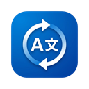

Hotkey Triggered
Nguồn
Could you share the latest meeting summary with the team?
Bản dịch
Bạn có thể chia sẻ tóm tắt cuộc họp mới nhất với cả nhóm không?
Sẵn sàng | Gemini Flash Lite | Clipboard Auto-Copy ON

Instant Translate Tải bản mới nhấtAPP DỊCH NHANH CHO WINDOWS
Chọn text ở bất kỳ ứng dụng nào, nhấn hotkey, nhận bản dịch tự nhiên. Hỗ trợ Gemini và Local AI (OpenAI-compatible), lưu lịch sử và chạy nền ổn định.
Nguồn
Could you share the latest meeting summary with the team?
Bản dịch
Bạn có thể chia sẻ tóm tắt cuộc họp mới nhất với cả nhóm không?
Sẵn sàng | Gemini Flash Lite | Clipboard Auto-Copy ON
TÍNH NĂNG CHÍNH
Dịch trực tiếp từ app bất kỳ trên Windows mà không cần chuyển cửa sổ.
Nhập đoạn văn, chọn ngôn ngữ đích và dịch tức thì trong app.
Lưu lại toàn bộ bản dịch, copy nhanh và xóa lịch sử khi cần.
Chuyển đổi giữa Gemini và endpoint OpenAI-compatible theo nhu cầu.
API key được mã hóa theo user profile Windows hiện tại trước khi lưu.
Ẩn xuống tray, tự khởi động cùng Windows và luôn sẵn sàng dịch nhanh.
CÁCH DÙNG
Upload thư mục này lên GitHub Pages là có ngay landing page. Chỉ cần thay `USERNAME/REPO` trong link download thành repo thật của bạn.
FAQ
Có. Bạn có thể bật tùy chọn chạy nền để app ẩn xuống system tray và tiếp tục lắng nghe hotkey.
Không. App hỗ trợ cả Local AI endpoint theo chuẩn OpenAI-compatible.
Trạng thái và lịch sử lưu cục bộ trong LocalApplicationData của Windows.